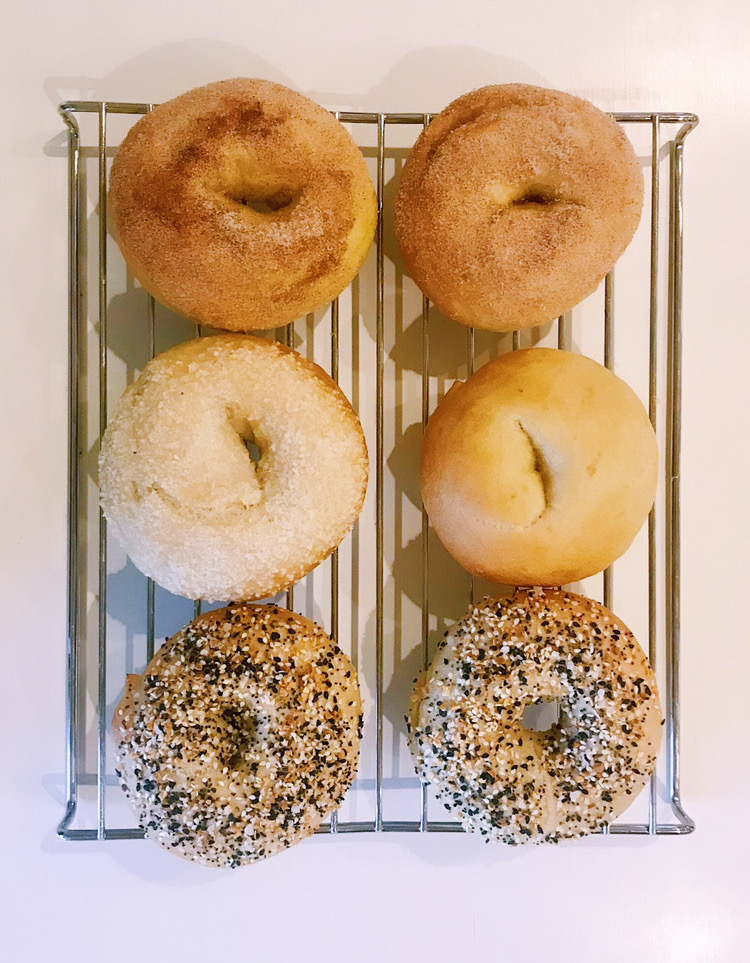
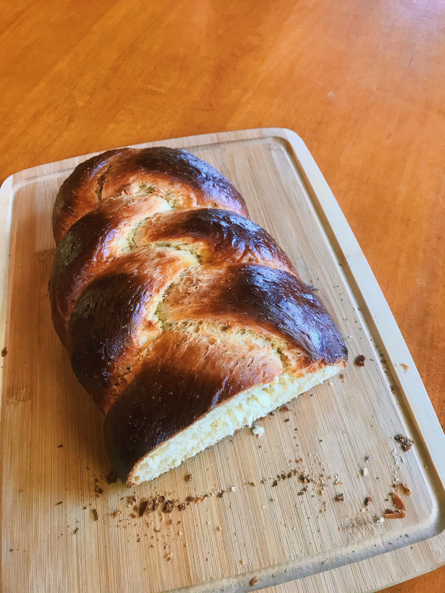
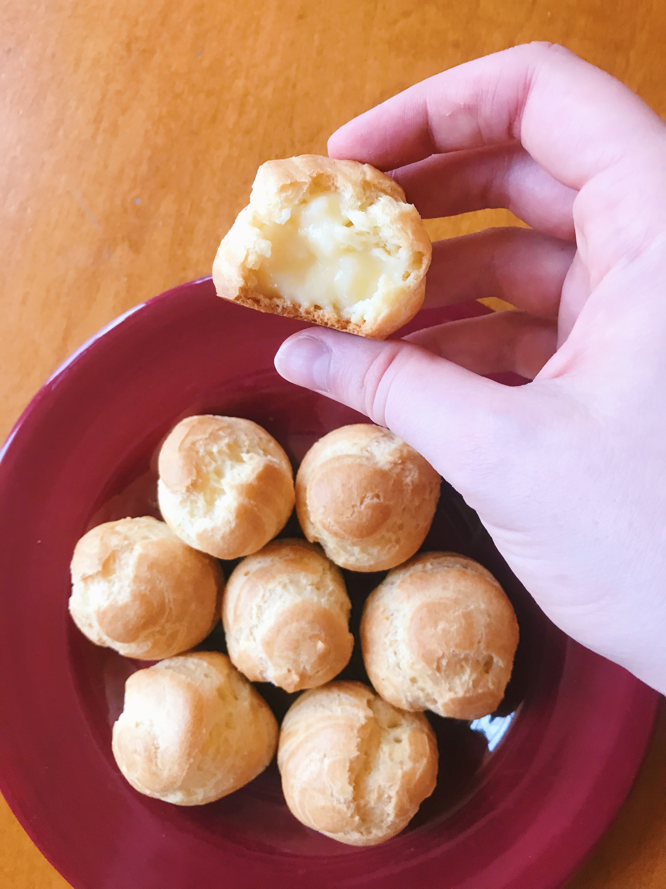
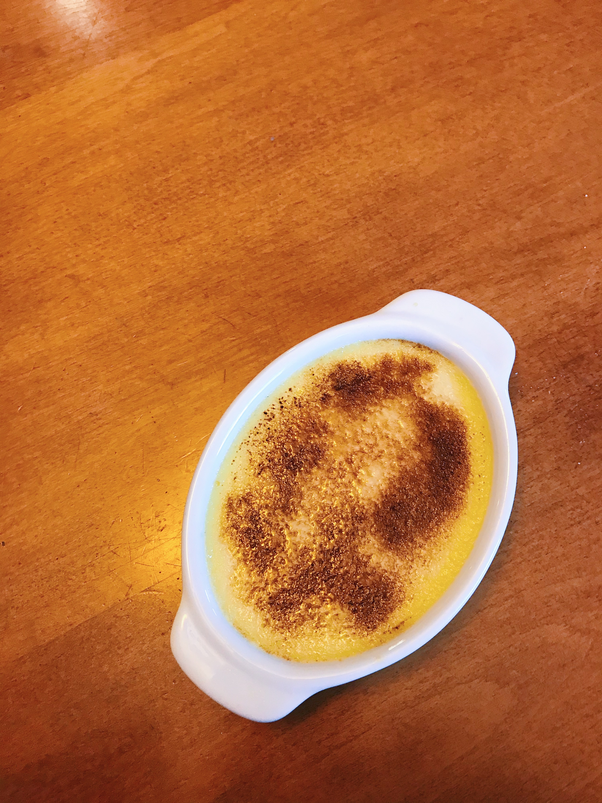
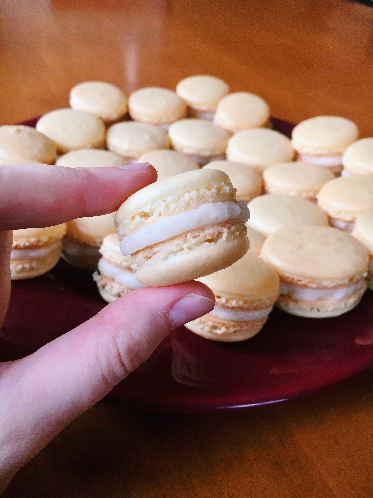

I took time making bagels, challah, cream puffs, creme brûlée, macrons, and other fun treats.
    Over the year I have done many little art projects; however, the one I am most proud of its a journal that I have been slowly adding to throughout the year.